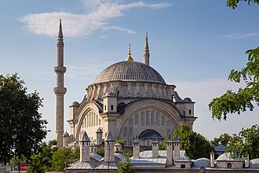

Presentazione
La mosquée Nuruosmaniye est une mosquée de style baroque ottoman, située dans le quartier Çemberlitaş du district de Fatih à Istanbul en Turquie. Elle jouxte l'entrée du Grand bazar d'Istanbul.
جامع نور عثمانية هو مسجد عثماني، يقع في حي تشنبرلي طاش ببلدية الفاتح، على التلة الثانية من تلال إسطنبول السبعة، وهو مبني من الرخام وله مئذنتان.
The Nuruosmaniye Mosque is an 18th-century Ottoman mosque located in the Çemberlitaş neighbourhood of Fatih district in Istanbul, Turkey, which was added to the Tentative list of World Heritage Sites in Turkey in 2016.
Nuruosmaniye Camii, İstanbul'da inşa edilmiş ilk barok özellikli camidir. Çemberlitaş semtinde, Kapalıçarşı girişinde yer alır. 1748-1755 yıllarında inşa edilmiştir.
Masjid Nuruosmani adalah sebuah masjid peninggalan Kesultanan Utsmaniyah pada abad ke-18 yang berada di kawasan Çemberlitaş, distrik Fatih, Provinsi Istanbul, Turki. Masjid ini sempat terdaftar di Situs Warisan Dunia UNESCO pada tahun 2016. Kubah masjid ini memiliki arsitektur yang sangat berbeda, dan terbesar keempat di kota Istanbul, selain kubah Masjid Hagia Sophia, Masjid Suleiman, dan Masjid Fatih.
نورِعثمانیہ مسجد (ترکی زبان: Nuruosmaniye Camii) ترکی کے شہر استنبول کے ضلع فاتح میں واقع ایک 18 ویں صدی کی ایک عثمانی مسجد ہے۔ سن 2016 میں اسے ترکی میں عالمی ثقافتی ورثہ مقامات کی عارضی فہرست میں شامل کیا گیا تھا۔
Die Nuruosmaniye-Moschee ist eine Moschee in Istanbul, nahe dem östlichen Eingang zum Großen Basar. Der Bau der „Lichtmoschee des Hauses Osman“ wurde von Mahmut I. 1748 in Auftrag gegeben und 1755 unter Osman III. beendet. Unter einer großen Kuppel sorgen fünf Fensterreihen für einen lichtdurchfluteten Innenraum. Sie war die erste Moschee Istanbuls im Stil des osmanischen Barocks. Errichtet wurde sie durch den ansonsten unbekannten Architekten Simeon Kalfa. Der Name „Nûruosmâniye“ bezieht sich zum einen auf den Namen des Sultans, unter dem sie vollendet wurde, und zum anderen auf die 24. Sure des Koran mit dem Lichtvers, der im Inneren der Kuppel abgebildet ist.
La mezquita de Nuruosmaniye es una mezquita barroca otomana situada en el barrio de Çemberlitaş del distrito Fatih de Estambul, Turquía. Limita con la entrada al Gran Bazar de Estambul.
La moschea di Nuruosmaniye è una moschea ottomana sita nel quartiere omonimo, nel distretto di Fatih, a Istanbul in Turchia.
A Mesquita de Nuruosmaniye é uma mesquita otomana situada no bairro de Çemberlitaş, distrito de Fatih, Istambul, Turquia. Construída entre 1749 e 1755, é considerada uma dos melhores exemplos de mesquitas em estilo otomano barroco.
奴魯奧斯瑪尼耶清真寺 是一座奥斯曼帝国清真寺，位于土耳其伊斯坦布尔法提赫区的君士坦丁纪念柱附近。它被认为是奥斯曼巴洛克风格清真寺的最佳例证之一。这座清真寺由苏丹马哈茂德一世下令建造，建築師穆斯塔法·阿伽 和Simon Kalfa，奧斯曼三世时期完成。建筑师采用了巴洛克建筑元素，这座清真寺有一个特别的沐浴喷泉。奴魯奧斯瑪尼耶清真寺靠近大巴扎的入口、狄奥多西广场以及古老的阿提克阿里帕夏清真寺。
누루오스마니예 모스크(튀르키예어: Nuruosmaniye Camii 누루오스마니예 자미[*])는 터키 이스탄불 젬베를리타슈에 위치한 모스크이다.
Мече́ть Нуруосмание́ — мечеть XVIII века, расположенная в старой части Стамбула на площади Чемберлиташ.
Sulla mappa
Documenti e link
- Wikipédia — Français
- Wikipédia — العربية
- Wikipédia — English
- Wikipédia — Türkçe
- Wikipédia — Bahasa Indonesia
- Wikipédia — اردو
- Wikipédia — Deutsch
- Wikipédia — Español
- Wikipédia — Italiano
- Wikipédia — Português
- Wikipédia — 中文
- Wikipédia — 한국어
- Wikipédia — Русский
- Wikidata — Q1430090
Dati: Wikidata (CC0), aggiornati ogni 3 mesi. L'anno è la data di costruzione conosciuta più antica dell'edificio: per un edificio diventato moschea in seguito (come Santa Sofia), è quella dell'edificio originario. Foto: Wikimedia Commons, autore e licenza nella pagina di ogni foto.